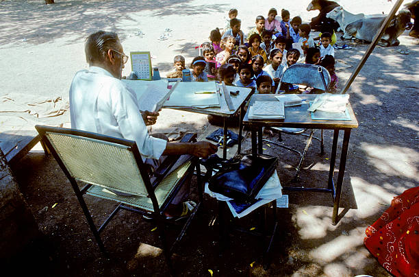

What is Quality Education?
Quality Education goes beyond simply having access to schools; it means providing a learning experience that is inclusive, equitable, and effective for every individual. At its core, Quality Education is about ensuring that every person, regardless of their background or circumstances, has the opportunity to develop the skills, knowledge, and values necessary for personal and societal growth.
Education that meets these criteria fosters critical thinking, creativity, and lifelong learning. It is the foundation for personal empowerment and is essential for tackling global challenges—from reducing poverty to addressing climate change. As defined by the United Nations in SDG 4, quality education should ensure accessibility, equip learners with future-relevant skills, and promote sustainable development by nurturing informed, engaged citizens.
The Role of Education in Sustainable Development
Education is a catalyst for sustainable development. It empowers individuals to improve their economic prospects, drives innovation, and enables communities to address complex challenges. When people are well-educated, they can make informed decisions, adapt to technological changes, and contribute to economic growth. According to the UNESCO Institute for Statistics, each additional year of schooling can boost individual earnings by up to 10% (UNESCO, 2021).
Moreover, quality education promotes social equity by breaking cycles of poverty and inequality. It creates a ripple effect—improving health, enhancing civic participation, and fostering a culture of innovation that benefits society at large.
Global Education Challenges
- Lack of Access to Schools
- In rural and underdeveloped areas, educational
facilities are scarce, forcing children to travel
long distances or miss out on schooling. - Financial Barriers
- High tuition fees and insufficient funding prevent many from accessing quality education.
- Teacher Shortages
- A lack of well-trained educators compromises the quality of learning.
- Gender Inequality
- Cultural and economic factors often limit educational opportunities for girls and marginalized groups.
- Inadequate Infrastructure
- Many schools lack essential amenities like electricity, clean water, and proper learning materials.
UNICEF estimates that millions of children worldwide remain out of school due to these challenges (UNICEF, 2020). Addressing these issues is vital to ensure that every child has the opportunity to learn and thrive.

Why is Quality Education Important?
Quality Education is a cornerstone for building sustainable societies and driving progress. It opens doors to better job opportunities, increases incomes, and fosters innovation. The World Bank highlights that investments in education yield substantial returns at both individual and national levels (World Bank, 2021).
Additionally, quality education plays a crucial role in promoting social progress and equality. It reduces gender disparities, encourages civic engagement, and builds community resilience. Countries with higher literacy and enrollment rates generally experience lower inequality and greater social stability (OECD, 2021).
Innovative Approaches and Future Trends
In today’s rapidly evolving world, innovative educational practices are emerging to overcome traditional challenges. Digital learning platforms like Khan Academy have democratized access to quality education by offering free, high-quality content to learners around the globe (Khan Academy, n.d.). Moreover, public–private partnerships, blended learning models, and community-led initiatives are proving effective in reaching underserved populations.
These innovations are paving the way for a future where quality education is a universal right, transforming how education is delivered and accessed. By integrating technology with creative teaching methods, we can create adaptive learning environments that meet the diverse needs of today’s learners and prepare them for tomorrow’s challenges.
Quality Education is fundamental to achieving sustainable development. It drives economic growth, fosters social progress, and empowers individuals to reach their full potential. While significant challenges remain, innovative approaches and a commitment to inclusivity are transforming education worldwide. By addressing these issues and embracing new methods, we can ensure that every individual benefits from a high-quality education, leading to a more equitable, prosperous, and sustainable future.